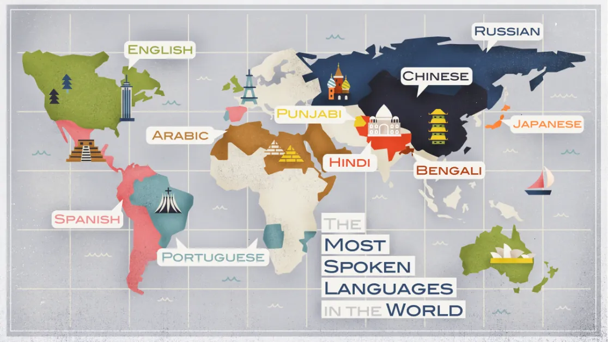

Determining what are the most spoken languages in the world is a more difficult task than you
might imagine. We can say with some confidence that Mandarin, English, Spanish and Arabic
will make an appearance (and roughly in what order), but there are some surprises, too!

No more talking here is the list :
Note : When tallied according to number of native speakers only, these are the most spoken languages in the world.
Numbers vary widely —
Ethnologue puts the number of native speakers at 1.3 billion native speakers,
roughly 900 million of whom speak Mandarin —
but there is no doubt it is the most spoken language in the world.
If you wish to learn a language that one in six people in the world speak,
this is the one for you. Seeing as Chinese is a tonal language that uses thousands of logograms,
it will certainly keep you busy.
If we were only to look at native speakers, Spanish is in front of English with about 485 million speakers. If you want a language that will open up whole continents to you,
Spanish is your best bet.
As with all the languages on this list, the politics of language and associated identity are highly disputed: ask Catalan or Quechua speakers if Spanish is their local tongue and you will get a very different answer.
But it is certainly the primary language of most of South and Central America, Spain, and, ahem, large swathes of the US.